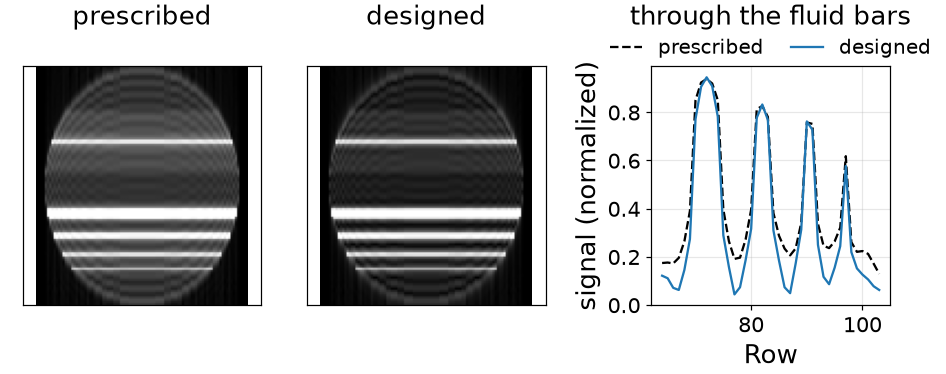
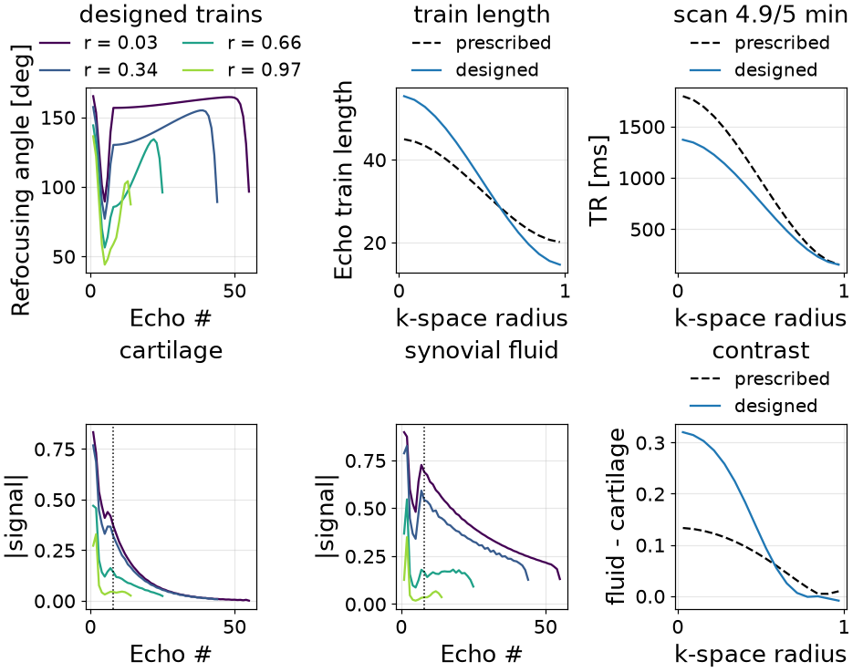

Note
Go to the end to download the full example code or to run this example in your browser via Binder.
Designing echo trains for image quality#
The scope of this notebook is to design refocusing flip angles for image quality rather than for precision: first a single echo train, then a whole segmented 3D protocol in which each shot carries its own repetition time, echo train length and angles.
T2 decay across a long train modulates k-space, and that modulation is a point spread function, so the refocusing angles control the resolution of the image [1]. Only the cost distinguishes this from a precision design; the simulator, the bounded parameters and the loop are the same.
A design is a simulator with its tissue fixed on it, a cost written on what
it records, and the bounded parameters SequenceDesign
drives.
import time
import torch
from torchsim.optim import Bounded, SequenceDesign
from torchsim.simulators import FSESimulator
Tissues#
A PD-weighted knee protocol is read for the separation between fluid and cartilage, so the design is for all three tissues at once. Designing for one of them would tailor the train to it.
Blurring#
With the echo index running along one k-space direction, the magnitude of the echo train is the k-space modulation, and the width of its Fourier transform is the blur it adds. That width can be read off the modulation without transforming anything: the second moment of \(|\mathcal{F}w|^2\) is the energy in the slope of \(w\) relative to the energy in \(w\) itself.
Written this way a train that stops early simply contributes fewer terms, so trains of different lengths compare on the same footing – which is what the second half of this example needs.
def blur(signal, acquired):
"""The width, in pixels, of the point spread a train produces.
Parameters
----------
signal:
``(shots, tissues, echoes)`` echo train magnitudes.
acquired:
``(shots, echoes)``, one where the shot is still acquiring.
Returns
-------
torch.Tensor
``(shots, tissues)``.
"""
pair = acquired[:, None, :-1] * acquired[:, None, 1:]
step = torch.diff(signal, dim=-1) * pair
energy = (signal * acquired[:, None, :]).square().sum(-1).clamp_min(1e-12)
lines = acquired.sum(-1)[:, None]
return lines / (2 * torch.pi) * (step.square().sum(-1) / energy).sqrt()
One train#
A 120-echo train has 120 angles but three degrees of freedom: the minimum, which sets how much the train is spoiled by flow and motion; the angle at the centre of k-space, which sets the image contrast; and the maximum, which the deposited RF power limits.
The train blends between them: it starts at the maximum, drops to the minimum as the pseudo steady state is established, passes through the centre-of- k-space angle where k-space is sampled, and ramps back up.
ESP_MS = 5.0
ECHOES = 120
CENTRE_ECHO = 24
one_train = FSESimulator(ESP=ESP_MS, states=12, **TISSUES)
echo = torch.arange(1, ECHOES + 1, dtype=torch.float32)
def ramp(index, start, stop, first, last):
"""A smooth step from ``first`` to ``last`` between two echo indices."""
span = ((index - start) / (stop - start).clamp_min(1e-3)).clamp(0.0, 1.0)
return first + (last - first) * span.square() * (3.0 - 2.0 * span)
def shape(index, control, length, centre_echo):
"""The refocusing angles of a train of ``length`` echoes.
Parameters
----------
index:
The echo indices to evaluate at, one-based.
control:
``(shots, 3)`` -- the minimum, centre-of-k-space and maximum angles.
length:
``(shots, 1)`` echo train length.
centre_echo:
The echo that samples the centre of the shot's k-space band.
"""
low, middle, high = control[:, 0:1], control[:, 1:2], control[:, 2:3]
settled = torch.full_like(low, 5.0)
sampled = torch.full_like(low, float(centre_echo))
return torch.where(
index <= 5,
ramp(index, torch.ones_like(low), settled, high, low),
torch.where(
index <= centre_echo,
ramp(index, settled, sampled, low, middle),
ramp(index, sampled, length, middle, high),
),
)
The cost: the image should be sharp, fluid should stand out from cartilage, and the RF power should stay where the scanner will accept it.
LOWEST = torch.tensor([20.0, 30.0, 60.0])
HIGHEST = torch.tensor([90.0, 160.0, 170.0])
PRESCRIBED = torch.tensor([[50.0, 90.0, 150.0]])
ALWAYS = torch.ones(1, ECHOES)
def power(flip, acquired, TR_ms):
"""Deposited RF power, per shot.
Refocusing energy divided by the time it is spread over, relative to a
train of 180 degree pulses. Energy per second is what a scanner limits,
so a train that ends early gets no credit for the echoes it never played
and none for a repetition time it does not take.
"""
energy = ((flip / 180.0).square() * acquired).sum(-1)
return energy / (TR_ms.squeeze(-1) * 1e-3)
#: What the prescribed train already deposits. RF power is a limit the
#: scanner enforces, so the cost may spend up to it and no further.
POWER_BUDGET = power(
shape(echo, PRESCRIBED, torch.full((1, 1), float(ECHOES)), CENTRE_ECHO),
ALWAYS,
torch.full((1, 1), 1800.0),
).mean()
def single_train(control):
"""Sharpness and contrast from one train of a fixed length."""
flip = shape(echo, control, torch.full_like(control[:, :1], ECHOES), CENTRE_ECHO)
signal = one_train.simulate(flip=flip, TR=1800.0).abs()
at_centre = signal[:, :, CENTRE_ECHO - 1]
contrast = at_centre[:, FLUID] - at_centre[:, CARTILAGE]
deposited = power(flip, ALWAYS, torch.full_like(control[:, :1], 1800.0))
return (
blur(signal, ALWAYS).mean()
- 12.0 * contrast.mean()
+ 20.0 * torch.relu(deposited.mean() / POWER_BUDGET - 1.0)
)
A conventional prescription to start from: 50 degree minimum, 90 degree
centre-of-k-space angle, 150 degree maximum. The limits are what the scanner
will play, and Bounded holds them exactly.
design = SequenceDesign(single_train, control=Bounded(PRESCRIBED, LOWEST, HIGHEST))
one = design.minimize(iterations=25, learning_rate=0.3)
one train of 120 echoes designed in 0.08 s, 3.3 ms per iteration
What it did:
LENGTH = torch.full((1, 1), float(ECHOES))
prescribed_flip = shape(echo, PRESCRIBED, LENGTH, CENTRE_ECHO)
designed_flip = shape(echo, one.parameters["control"], LENGTH, CENTRE_ECHO)
prescribed_signal = one_train.simulate(flip=prescribed_flip, TR=1800.0).abs()
designed_signal = one_train.simulate(flip=designed_flip, TR=1800.0).abs()

prescribed min 50.0 centre 90.0 max 150.0 deg | blur 4.34 px | fluid - cartilage 0.220
designed min 89.2 centre 85.5 max 147.8 deg | blur 3.55 px | fluid - cartilage 0.218
Optimized schedule#
The echo index runs along one k-space direction, so forming the image is a multiplication: transform each tissue’s contribution along the phase-encode axis, weight every line by the train at the echo that sampled it, and transform back. A fast-decaying train weights the edges of k-space down and comes back smeared.
The phantom is a cartoon knee: a cartilage band with a two-pixel joint line, and four fluid bars five, three, two and one pixels thick. No noise is added, so what differs between the two images is the train alone.
The joint line and the thin bars are where a point spread of a pixel or two shows. The ringing at every edge is the finite matrix rather than the train; what the design moves is the depth of the troughs between the bars.

Sharpness moved without giving up contrast: the fluid-to-cartilage difference at the centre of k-space is within a percent of where it started while the point spread narrowed by nearly a fifth. The power term is what prevents the design buying sharpness by driving the train harder than the scanner allows.
The one-pixel bar is the limit. A point spread narrower than a pixel is not available, so a bar flattened in both images is flattened by the matrix.
A whole protocol#
Segmented 3D TSE splits k-space over many shots, and they do not do the same job: the centre sets contrast, the periphery sets sharpness. Giving each shot its own parameters lets a protocol spend a long repetition time where contrast comes from and a short one where it does not [2].
The prescription is two sets of numbers, at the centre and at the periphery, and a cubic transition builds every shot between them. What transitions is the repetition time, the echo train length and the three control angles.
ESP_SPACE_MS = 3.5
TE_MS = 28.0
TE_ECHO = round(TE_MS / ESP_SPACE_MS)
GRID = 64 # the padded echo axis, at least as long as the longest train
# 320 x 240 phase-encode matrix, CAIPIRINHA 4, elliptical scanning.
LINES = round(320 * 240 / 4 * torch.pi / 4)
BUDGET_S = 300.0
SAMPLES = 16
protocol_shots = FSESimulator(ESP=ESP_SPACE_MS, states=12, **TISSUES)
grid_echo = torch.arange(1, GRID + 1, dtype=torch.float32)
# Each sampled radius stands for the shots at that distance from the centre of
# k-space. Their number grows with radius, because that is the area element of
# the phase-encode plane.
radius = (torch.arange(SAMPLES, dtype=torch.float32) + 0.5) / SAMPLES
density = 2 * radius / (2 * radius).sum()
cubic = (3 * radius.square() - 2 * radius.pow(3))[:, None]
def transition(centre, periphery):
"""Every shot's value, cubically between the two prescribed ends."""
return centre + (periphery - centre) * cubic
Shots differ in length: the centre can afford a long train because contrast is decided by one echo of it, while the periphery wants a short one so its lines are not spread by T2 decay. A train that has ended is masked out of the padded echo axis.
A refocusing angle of exactly zero is a corner, not a point – what reaches the scanner is a magnitude, which has no sign there – so the mask floors at a negligible angle.
FLOOR = 1e-6
def protocol(
centre_control, edge_control, centre_length, edge_length, centre_TR, edge_TR
):
"""Every shot of the exam, from the two prescribed ends."""
control = transition(centre_control, edge_control)
length = transition(centre_length, edge_length)
TR = transition(centre_TR, edge_TR)
acquired = torch.sigmoid(length - grid_echo).clamp_min(FLOOR)
flip = shape(grid_echo, control, length, TE_ECHO) * acquired
return flip, TR, length, acquired
Covering k-space is what ties the two ends together. A shot covers as many lines as its train is long, so the shot count is the lines divided by the average train length and the scan time is that many shots at the average repetition time. Lengthening the trains at the centre buys the repetition time there.
def measure(**design):
"""Everything the cost reads, from one batched simulation of all shots."""
flip, TR, length, acquired = protocol(**design)
signal = protocol_shots.simulate(flip=flip, TR=TR).abs()
shots = LINES / (density * acquired.sum(-1)).sum()
scan_s = shots * (density * TR.squeeze(-1)).sum() * 1e-3
return signal, flip, TR, length, acquired, shots, scan_s
def deposited(flip, acquired, TR):
"""The exam's RF power, averaged over its shots."""
return (density * power(flip, acquired, TR)).sum()
#: The power the prescription deposits, which is what the exam may spend.
PRESCRIBED_PROTOCOL = protocol(
PRESCRIBED,
PRESCRIBED,
torch.tensor([[45.0]]),
torch.tensor([[20.0]]),
torch.tensor([[1800.0]]),
torch.tensor([[150.0]]),
)
SPACE_POWER_BUDGET = deposited(
PRESCRIBED_PROTOCOL[0], PRESCRIBED_PROTOCOL[3], PRESCRIBED_PROTOCOL[1]
)
def image_quality(**design):
"""Sharpness where it is decided, contrast where it is decided."""
signal, flip, TR, length, acquired, shots, scan_s = measure(**design)
at_centre = signal[:, :, TE_ECHO - 1]
contrast = at_centre[:, FLUID] - at_centre[:, CARTILAGE]
outer, inner = density * radius, density * (1.0 - radius)
# A train must fit inside its own repetition time, with room for the
# excitation and the fat saturation ahead of it.
infeasible = torch.relu(
length.squeeze(-1) * ESP_SPACE_MS + 60.0 - TR.squeeze(-1)
).mean()
return (
0.7 * (outer * blur(signal, acquired).mean(-1)).sum() / outer.sum()
- 12.0 * (inner * contrast).sum() / inner.sum()
+ 20.0 * torch.relu(scan_s - BUDGET_S) / BUDGET_S
+ 10.0 * infeasible / 60.0
+ 20.0 * torch.relu(deposited(flip, acquired, TR) / SPACE_POWER_BUDGET - 1.0)
)
Starting from the prescription the abstract reports: a 45 echo train at 1800 ms at the centre, a 20 echo train at 150 ms at the periphery.
PRESCRIPTION = {
"centre_control": Bounded(PRESCRIBED, LOWEST, HIGHEST),
"edge_control": Bounded(PRESCRIBED, LOWEST, HIGHEST),
"centre_length": Bounded(torch.tensor([[45.0]]), 12.0, 60.0),
"edge_length": Bounded(torch.tensor([[20.0]]), 12.0, 60.0),
"centre_TR": Bounded(torch.tensor([[1800.0]]), 150.0, 2600.0),
"edge_TR": Bounded(torch.tensor([[150.0]]), 150.0, 2600.0),
}
design = SequenceDesign(image_quality, **PRESCRIPTION)
many = design.minimize(iterations=40, learning_rate=0.2)
a whole protocol designed in 0.46 s, 11.5 ms per iteration
Covering this matrix with the trains the prescription asks for takes a shot count that falls out of the arithmetic above; the abstract reports 586.
centre of k-space periphery
ETL TR ETL TR shots scan
prescribed 44.9 1795 ms 20.1 155 ms 558 6.01 min
designed 55.3 1371 ms 14.6 154 ms 573 4.95 min
refocusing angles min centre-of-band max
prescribed, centre 50.0 90.0 150.0
prescribed, periphery 50.0 90.0 150.0
designed, centre 89.5 157.0 165.2
designed, periphery 43.9 58.6 136.2
fluid - cartilage at the centre 0.133 -> 0.320
blur at the periphery 1.85 -> 1.55 px
RF power 22.51 -> 19.89 (budget 22.51)
The trains the transition produced. Each curve is one sampled distance from the centre of k-space; shots between them read the same curve at their own radius, which keeps k-space free of the discontinuities a shot-by-shot design would leave.

[<matplotlib.legend.Legend object at 0x7f4dd810d430>, <matplotlib.legend.Legend object at 0x7f4dd9bdcbf0>, <matplotlib.legend.Legend object at 0x7f4dd887dac0>]
References#
Total running time of the script: (0 minutes 2.500 seconds)